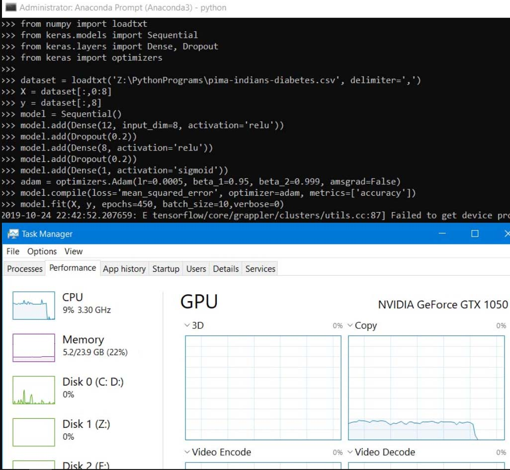

|
Table of Contents
|
न्यूरल नेटवर्क मॉडल−ट्यूनिंग
सीपीयू−मोड बनाम जीपीयू−मोड में मशीन लर्निंग
बिना जीपीयू वाले सामान्य लैपटॉप या डेस्कटॉप पर मशीन लर्निंग का साधारण प्रोग्राम http://vedicastrology.wikidot.com/machine-learning-starter में दिखाया गया था जिसका डैटासेट अमरीका की यूनिवर्सिटी अॅव कैलिफोर्निया एण्ड लास एन्जेल्स के इर्वाइन कैम्पस के मशीन लर्निंग ऑनलाइन डैटाबेस से लिया गया है - अमरीकी “पीमा” रेड−इण्डियन आदिवासियों में मधुमेह के बारे में ७६८ स्त्रियों का हास्पीटल रेकर्ड ।
http://vedicastrology.wikidot.com/gpu-neural-network-training लेख में लैपटॉप या डेस्कटॉप में NVIDEA का जीपीयू यदि पहले से हो तो उसका उपयोग करके मशीन लर्निंग की गति कैसे बढ़ायी जा सकती है यह दिखाया गया था । सिद्धान्ततः यदि आठ कोर वाले मेरे सीपीयू के आठों कोरों का उपयोग हो - जो सामान्यतः नहीं होता - तब भी मेरे लैपटॉप में जीपीयू−मोड की कम्प्यूटिंग गति लगभग ४७ गुणी बढ़नी चाहिये । किन्तु वास्तविक गति ४७ हजार गुणी अधिक पायी गयी क्योंकि सामान्यतः एक प्रोग्राम सीपीयू के केवल एक कोर का ही उपयोग करता है जबकि जीपीयू के सभी ६४० कोरों का उपयोग केरस करता है । सीपीयू की गति जीपीयू से १⋅७ गुणी अधिक है किन्तु एक प्रोग्राम हेतु कोरों की संख्या ६४० गुणी कम है，अतः मशीन लर्निंग के साधारण प्रोग्राम की गति जीपीयू−मोड में ३७६ गुणी बढ़नी चाहिये परन्तु ४७ हजार गुणी बढ़ी - जिसका अर्थ यह है कि सीपीयू की वास्तविक गति उसकी सैद्धान्तिक गति से १२६ गुणी कम है！इसका कारण यह है कि माइक्रोसॉफ्ट विण्डो सीपीयू का गला दबाये रहता है，उसे पूरी क्षमता से कार्य ही नहीं करने देता । माइक्रोसॉफ्ट विण्डो सदा अपने आप कुछ न कुछ करता रहता है जिस कारण सीपीयू व्यस्त रहता है किन्तु इससे भी महत्वपूर्ण कारण है विण्डो डिफेण्डर या एण्टी वायरस द्वारा मशीन लर्निंग प्रोग्राम के हर स्टेप में वेट्स् की अपडेटिंग में बाधा！यही कारण है कि संसार का कोई भी सुपर−कम्प्यूटर माइक्रोसॉफ्ट विण्डो का प्रयोग नहीं करता，लायनक्स के किसी वर्सन का प्रयोग करता है जिसे आवश्यकता के अनुसार ढाला जा सकता है । माइक्रोसॉफ्ट विण्डो उनके लिये अच्छा है जो निश्चिन्त होकर सामान्य कार्य करना चाहते हैं । मशीन लर्निंग का प्रोग्राम बन जाने के बाद माइक्रोसॉफ्ट विण्डो या मैक या एण्ड्रॉयड जैसे किसी भी सिस्टम पर चलाया जा सकता है，किन्तु मशीन लर्निंग का प्रोग्राम बनाने के लिये तीव्र गति का कम्प्यूटर चाहिये । बिना जीपीयू वाले सामान्य लैपटॉप पर छोटे मोटे मशीन लर्निंग के प्रोग्राम बनाये जा सकते हैं，बड़े प्रोग्राम बनाने के लिये कई महिनों तक लैपटॉप लगातार व्यस्त रह जायगा और सम्भवतः जल जायगा ।
आपके लैपटॉप या डेस्कटॉप में NVIDEA का जीपीयू पहले से हो तो उसे मशीन लर्निंग के लिये कैसे चालू किया जाय यह उपरोक्त दूसरे लिंक में दिखाया गया था । अब प्रस्तुत लेख में यह दिखाया जा रहा है कि किस तरह बिना जीपीयू−मोड वाले उपरोक्त पहले लिंक वाले प्रोग्राम को भी जीपीयू−मोड में चलाकर जीपीयू का लाभ उठाया जाय । केरस−जीपीयू एनवॉयरनमेण्ट को कैसे एक्टिवेट किया जाय यह उपरोक्त दूसरे लिंक वाले लेख में है । केरस−जीपीयू एनवॉयरनमेण्ट में बिना कोई परिवर्तन किया सारे मशीन लर्निंग प्रोग्राम चलाये जा सकते हैं ।
किन्तु डेडिकेटेड जीपीयू ग्राफिक कार्यों के लिये बनते हैं，अतः गैर−ग्राफिक नुमेरिकल डैटा को ग्राफिक मैट्रिक्स में ढालने के पश्चात ही डेडिकेटेड जीपीयू की तीव्र गति का लाभ नुमेरिकल या भाषायी प्रोग्रामिंग के लिये किया जा सकता है，अन्यथा सीपीयू−मोड की तुलना में भी प्रोग्राम की गति घट जायगी - क्योंकि तब सीपीयू से डैटा का आदान−प्रदान में जीपीयू का समय नष्ट होगा । गैर−ग्राफिक नुमेरिकल डैटा को ग्राफिक मैट्रिक्स में ढालने के लिये नम्पी का अध्ययन करना पड़ेगा । गैर−ग्राफिक नुमेरिकल डैटा को ग्राफिक मैट्रिक्स में ढाले बिना जीपीयू−मोड में गैर−ग्राफिक नुमेरिकल डैटा की मशीन लर्निंग कैसे करें यह नीचे दिखाया जा रहा है ।
~~~~~~~~~~~~~~~~~~~~~~~~~~~~~~~~~~~~~~~~~~~~~~~~~~~~~~~~~~~~~~~~~
जीपीयू−मोड में सीपीयू−मोड के प्रोग्राम
अनाकोण्डा एडमिन प्रॉम्प्ट में केरस−जीपीयू एनवॉयरनमेण्ट को एक्टिवेट कर लें और उसमें उपरोक्त पहले लिंक वाले “पीमा” रेड−इण्डियन मधुमेह प्रोग्राम को चलायें，समय कुछ अधिक ही लगेगा किन्तु पूरा प्रोग्राम जीपीयू में चलेगा और जनरल रैम पर बोझ नहीं पड़ेगा तो जनरल रैम अन्य कार्यों के लिये मुक्त रहेगा ।
जीपीयू−मोड के सैकड़ों या हजारों कोरों का पूरा लाभ उठाने के लिये मशीन लर्निंग प्रोग्राम के डैटाबेस को जीपीयू की आन्तरिक संरचना के अनुसार रिशेप करना पड़ेगा जो कठिन कार्य है，परन्तु तब प्रोग्राम की गति अत्यधिक तीव्र हो जायगी । किन्तु उससे पहले यह आवश्यक है कि आप सारे मशीन लर्निंग प्रोग्रामों को जीपीयू−मोड में चलाना सीख लें । उसके बाद मशीन लर्निंग प्रोग्रामों में प्रयुक्त मॉडलों के आन्तरिक पैरामीटरों की समुचित ट्यूनिंग करना सीख लें जिसके बिना आप कभी भी मशीन लर्निंग के अच्छे प्रोग्राम नहीं बना सकते ।
मशीन लर्निेग प्रोग्रामर बनने के लिये विभिन्न बनी−बनायी लाइब्रेरियों के लाभ और उनके उपयोग की विधि सीखना आवश्यक है । उदाहरणार्थ，यदि आप numpy का उपयोग नहीं जानते तो बहुत से डैटाबेसों का मशीन लर्निेग प्रोग्रामों में उपयोग ही नहीं कर पायेंगे । जब डैटाबेस ही नहीं खुलेगा तो मशीन लर्निेग किस डैटा पर करेंगे？
उसके बाद उपरोक्त डैटा की प्रकृति के अनुसार मशीन लर्निेग का कौन सा मॉडल अधिक उपयुक्त होगा यह चयन करना पड़ेगा । सारे मॉडलों का सैद्धान्तिक और व्यावहरिक ज्ञान रहेगा तभी डैटा के अनुरूप सर्वोत्तम मशीन लर्निेग मॉडल का चयन कर सकेंगे，और तभी चुने गये मॉडल के विभिन्न पैरामीटरों की सही तरीके से ट्यूनिंग कर सकेंगे । इतना सीख लेगें तो आप मशीन लर्निेग प्रोग्रामर बन गये，बाँकी बातें इतना सीखने के क्रम में स्वतः सीखना ही पड़ेगा । गलत मॉडल और गलत पैरामीटरों का चयन करेंगे तो परिणाम गलत तो होगा ही，इस बात की भी सम्भावना रहेगी कि कम्प्यूटर अनन्त काल तक के लिये व्यस्त रह जाय और “ऑल्ट＋कण्ट्रोल＋डिलीट” द्वारा उस प्रोग्राम को बलपूर्वक बीच में बन्द करना पड़े ताकि कम्प्यूटर जले नहीं ।
~~~~~~~~~~~~~~~~~~~~~~~~~~~~~~~~~~~~~~~~~~~~~~~~~~~~~~~~~~~~~~~~~
जीपीयू−मोड में रेड−इण्डियन मधुमेह प्रोग्राम
अनाकोण्डा एडमिन प्रॉम्प्ट में केरस−जीपीयू एनवॉयरनमेण्ट के अन्तर्गत “पीमा” रेड−इण्डियन मधुमेह प्रोग्राम का स्क्रीनशॉट संलग्न है ।
~~~~~~~~~~~~~~~~~~~~~~~~~~~~~~~~~~~~~~~~~~~~~~~~~~~~~~~~~~~~~~~~~
स्क्रीनशॉट का वर्णन
जब मशीन लर्निंग का प्रोग्राम आरम्भ नहीं किया गया था तब विण्डो का टास्क−मैनेजर सीपीयू को १% ，सामान्य रैम को ५९% एवं जीपीयू को ०% व्यस्त दिखा रहा था，किन्तु यह प्रोग्राम आरम्भ होने पर सीपीयू ५८% ，सामान्य रैम ५९% एवं NVIDEA जीपीयू को २१% व्यस्त दिखा (स्क्रीनशॉट में सीपीयू ९% एवं सामान्य रैम ६६% व्यस्त दिखा रहा है क्योंकि स्क्रीनशॉट लेते समय स्क्रीनशॉट लेने वाला MWSnap सॉफ्टवेयर मेरे लैपटॉप में कार्य कर रहा था)। प्रोग्राम समाप्त होने के बाद का यह स्क्रीनशॉट है जो दिखा रहा है कि स्क्रीनशॉट लेने से कुछ ही सेकण्ड पहले NVIDEA (GeForce GTX-1050，जो ४ जीबी का है) जीपीयू व्यस्त था । सामान्य रैम मशीन लर्निंग प्रोग्राम आरम्भ होने से पहले भी ५९% व्यस्त था और प्रोग्राम चलते समय भी उतना ही व्यस्त था ，जो सिद्ध करता है कि समूचा मशीन लर्निंग प्रोग्राम केवल जीपीयू पर ही चला，सामान्य रैम का बिल्कुल उपयोग नहीं हुआ । यह कमाल केरस−जीपीयू का है जिसने NVIDEA के CUDA का स्वचालित तरीके से उपयोग किया और माइक्रोसॉफ्ट विण्डो के video memory manager (VidMm) और GPU scheduler (VidSch) ने टास्क मैनेजर में इसे दर्शाया ।
स्क्रीनशॉट में टास्क मैनेजर दिखा रहा है कि NVIDEA जीपीयू का 3D−इञ्जन 0% व्यस्त है और NVIDEA जीपीयू का केवल कॉपी−इञ्जन कार्य कर रहा है । NVIDEA जीपीयू के विडियो−एनकोड और वीडियो−डिकोड इञ्जन भी 0% व्यस्त हैं । 3D−इञ्जन का उपयोग 3D−गेमिंग में वीडियो−रेन्डरिंग के लिये होता है，और वीडियो के एनकोडिंग तथा डिकोडिंग इञ्जनों का उपरोक्त मशीन लर्निंग प्रोग्राम में कोई प्रयोजन नहीं था । NVIDEA जीपीयू का कॉपी−इञ्जन，जिसका वास्तविक नाम “कम्प्यूटिंग−इञ्जन” है，ही डैटा को इधर से उधर और उधर से इधर करता रहता है । इधर−उधर का अर्थ है कम्प्यूटर का सीपीयू ही सदैव सारी कम्प्यूटिंग करता है किन्तु सीपीयू की आन्तरिक मेमोरी बहुत कम होती है जिस कारण बड़े आकार के डैटा के लिये रैम की आवश्यकता होती है जहाँ से डैटा सीपीयू लेता है और अपना आन्तरिक रैम छोटा पड़ने पर वहाँ अतिरिक्त डैटा रखता है । सीपीयू की आन्तरिक मेमोरी की गति अत्यधिक होती है किन्तु उसका आकार बड़ा नहीं होता जिस कारण अलग रैम−कार्ड की आवश्यकता पड़ती है । पृथक रैम दो प्रकार के होते हैं — सामान्य रैम और डेडिकेटेड वीडियो रैम । केवल मँहगे लैपटॉपों में ही डेडिकेटेड वीडियो रैम होते हैं，भारत में लगभग न्यूनतम ६० हजार रूपये से आरम्भ होते हैं किन्तु डेस्कटॉप में सस्ते पड़ते हैं और उनमें डेडिकेटेड वीडियो रैम की गति भी अधिक होती है । सामान्य रैम में भी कुछ हिस्सा वीडियो रैम के लिये देकर वीडियो प्रोग्राम और गेम चलाये जा सकते हैं किन्तु वे उतने तीव्रगति से नहीं चलते जितनी डेडिकेटेड वीडियो रैम में चलते हैं，क्योंकि डेडिकेटेड वीडियो रैम में ३८४ से लेकर हजारों कोर होते हैं । डेडिकेटेड वीडियो रैम में कई प्रकार के वीडियो−इञ्जन होते हैं，जिनमें मुख्य हैं 3D इञ्जन तथा कम्प्यूटिंग इञ्जन । वीडियो चलाते समय डिकोड इञ्जन और एनकोड इञ्जन भी सक्रिय हो जाते हैं । इनके अलावा किसी किसी प्रोग्राम में क्रिप्टोग्राफिक इञ्जन भी सक्रिय रहता है । 3D एनिमेशन फिल्म बनाने में विभिन्न वीडियो इञ्जनों का उपयोग होता है ।
http://vedicastrology.wikidot.com/gpu-neural-network-training प्रोग्राम में ७० हजार हस्तलिखित अङ्कों के २८x२८ पिक्सेल के ग्रेस्केल इमेज का डैटाबेस है । २८x२८ के array में काला या श्वेत को दर्शाने के लिये शून्य या एक अङ्कों के बूलियन डैटा हैं । उसी तरह array में यदि आप इमेज के बदले अपना गणितीय डैटा दें तो वीडियो कार्ड का कम्प्यूटिंग इञ्जन उस डैटा का बिजली की गति से प्रोसेसिंग करेगा — यही रहस्य है लैपटॉप द्वारा सुपर−कम्प्यूटिंग करने के पीछे ।
फिलहाल उस स्तर पर न जाकर केवल यह दिखाया गया है कि किस तरह मशीन लर्निंग के सारे प्रोग्रामों को डेडिकेटेड ग्राफिक कार्ड पर चलाया जा सकता है，भले ही वह प्रोग्राम सीपीयू−मोड वाला ही क्यों न हो！
पीमा आदिवासियों का मधुमेह डैटाबेस और उसका मशीन लर्निंग प्रोग्राम सीपीयू−मोड का है किन्तु यहाँ जीपीयू−मोड में चलाकर दिखाया गया है ।
~~~~~~~~~~~~~~~~~~~~~~~~~~~~~~~~~~~~~~~~~~~~~~~~~~~~~~~~~~~~~~~~~
न्यूरल नेटवर्क मॉडल का वर्णन
मधुमेह डैटाबेस का मशीन लर्निंग प्रोग्राम — पुराना
यह है पीमा आदिवासियों का मधुमेह मशीन लर्निंग मूल प्रोग्राम (वामभाग में लाइन−नम्बर और स्पेस हटाकर ही प्रोग्राम चलाना चाहिये，जैसा कि उपरोक्त पहले लिंक वाले वेबपृष्ठ पर दिखाया गया है ।) —
▃▃▃▃▃▃▃▃▃▃▃▃▃▃▃▃▃▃▃▃▃▃▃▃▃▃▃▃▃
1 from numpy import loadtxt
2 from keras.models import Sequential
3 from keras.layers import Dense
4 dataset = loadtxt('Z:\PythonPrograms\pima-indians-diabetes.csv', 5 delimiter=',')
5 X = dataset[:,0:8]
6 y = dataset[:,8]
7 model = Sequential()
8 model.add(Dense(12, input_dim=8, activation='relu'))
9 model.add(Dense(8, activation='relu'))
10 model.add(Dense(1, activation='sigmoid'))
11 model.compile(loss='binary_crossentropy', optimizer='adam', metrics=['accuracy'])
12 model.fit(X, y, epochs=150, batch_size=10)
13 _, accuracy = model.evaluate(X, y)
14 print('Accuracy: %.2f' % (accuracy*100))
▃▃▃▃▃▃▃▃▃▃▃▃▃▃▃▃▃▃▃▃▃▃▃▃▃▃▃▃▃
प्रथम पङ्क्ति का अर्थ है pima-indians-diabetes.csv डैटाबेस को पढ़ने के लिये Numpy नाम की लाइब्रेरी को प्रोग्राम में सम्मिलित अर्थात् इम्पोर्ट करना । यह लाइब्रेरी बनी है C++ प्रोग्रामिंग भाषा में किन्तु पायथन प्रोग्रामिंग भाषा में इसका उपयोग करने में सक्षम है । Numpy का समुचित प्रयोग इण्टरनेट के विभिन्न ट्यूटोरियलों द्वारा सीख लेंगे तो प्रोग्राम के उद्देश्य और मॉडल के अनुरूप डैटाबेस को रि−शेप करना सीख लेंगे । यह विस्तृत विषय है ।
उपरोक्त दूसरी पङ्क्ति का अर्थ यह है कि आप इस प्रोग्राम के लिये Sequential नाम के मॉडल का चयन कर रहे हैं क्योंकि डैटा बेस उसी प्रकृति का है । केरस के अपने वेबसाइट पर इस मॉडल का वर्णन उपलब्ध है — https://keras.io/getting-started/sequential-model-guide/ । गूगल सर्च द्वारा अनेक ट्यूटोरियल भी ढूँढ सकते हैं । अन्य मॉडलों का कामचलाऊ ज्ञान भी इसी तरह सीख लें ताकि भविष्य में डैटा की प्रकृति के अनुरूप समुचित मशीन लर्निंग मॉडल का चयन करने में गलती न हो । यहाँ उन ट्यूटोरियलों की बातों को दुहराना अनावश्यक है，यहाँ केवल व्यावहारिक प्रोग्राम बनाने और चलाने की विधि का वर्णन है । थ्योरी उन ट्यूटोरियलों में पढ़ लें । उन ट्यूटोरियलों को पढ़कर व्यावहारिक प्रोग्राम बनाने में जो कठिनाइयाँ हैं उनको स्पष्ट करने के लिये ही यह लेख−श्रृङ्खला है，सैद्धान्तिक व्याख्या के लिये नहीं ।
तीसरी पङ्क्ति का अर्थ है डेन्स नाम के न्यूरल नेटवर्क लेयर का चयन किया जा रहा है । डेन्स लेयर का पिछले लेयर से सघन सम्बन्ध होता है । विस्तृत वर्णन गूगल सर्च या विकिपेडिया पर देखें ।
चौथी पङ्क्ति डैटाबेस को पढ़कर मेमोरी में लोड करती है । मेरे लैपटॉप में Z:\PythonPrograms पथ में यह डैटाबेस फाइल है ।
पङ्क्ति−५ का अर्थ है डैटाबेस के पहले आठ कॉलमों (शून्य से ७ तक) में रोगी के विविध लक्षण है जिन्हें x के अन्तर्गत दर्शाया जा रहा है ।
पङ्क्ति−६ का अर्थ है डैटाबेस के अन्तिम कॉलम (नौंवे) में रोगी के मधुमेह होन या न होने का आँकड़ा है जिन्हें y के अन्तर्गत दर्शाया जा रहा है ।
मशीन लर्निंग का यह प्रोग्राम यह मानकर बना है कि x के अन्तर्गत मधुमेह के समस्त कारक हैं और y के अन्तर्गत उन कारकों का परिणाम है । ये सारे कारक मिलकर भी मधुमेह के सम्पूर्ण कारक नहीं हैं，हालाँकि मधुमेह से सम्बन्ध रखते हैं यह माना जाता है । यही कारण है कि मशीन लर्निंग का कोई भी प्रोग्राम कभी भी मधुमेह की १००% भविष्यवाणी नहीं कर सकता । १००% भविष्यवाणी तभी सम्भव है जब आपके पास सही समीकरण हो，किन्तु तब आप समीकरण द्वारा हल ढूँढ लेंगे，मशीन लर्निंग की आवश्यकता तब पड़ती है जब सारे या किसी भी कारण की जानकारी न हो और कोई सूत्र वा समीकरण न हो । जिन तत्वों को कारक मानकर मशीन लर्निंग की जाती है उनका परिणाम से बिल्कुल भी सम्बन्ध न हो तो मशीन लर्निंग से कोई लाभ नहीं，उन तत्वों का परिणाम से कुछ न कुछ सम्बन्ध होना चाहिये，भले ही वे पूर्ण कारण न हों । उदाहरणार्थ，यदि मधुमेह के कारकों में आप ऐसे तत्वों को रखेंगे कि रोगी को किस रङ्ग के कपड़े या किस कलाकार की फिल्म पसन्द है तो मशीन लर्निंग का परिणाम भी हास्यास्पद मिलेगा ।
पङ्क्ति−६ से पङ्क्ति−११ तक मॉडल का निर्माण और पैरामीटरों का निर्धारण है । अगले अनुछेद में इनका वर्णन है ।
पङ्क्ति−१२ model.fit में मॉडल की वास्तविक ट्रेनिंग है，यही वास्तविक मशीन लर्निंग है ।
पङ्क्ति−१३ में मॉडल की एक्यूरेसी की गणना है और पङ्क्ति−१४ में उसका प्रदर्शन है ।
मधुमेह डैटाबेस का मशीन लर्निंग प्रोग्राम — अपडेट
उपरोक्त प्रोग्राम टेन्सरफ्लो के पिछले वर्सन के लिये बना था किन्तु इस प्रोग्राम के रचयेता ने इसे अपडेट नहीं किया जिस कारण नौसीखियों को कठिनाई होगी । केरस अपने अन्तर्गत टेन्सरफ्लो को साथ लेकर कार्य करता है，केरस के वर्तमान संस्करण के अनुरूप टेन्सरफ्लो का वर्तमान संस्करण आपके कम्प्यूटर या स्मार्टफोन में इन्सटॉल रहेगा तो उपरोक्त प्रोग्राम रन करने में समस्या हो सकती है । अतः उपरोक्त प्रोग्राम में निम्नोक्त सुधार करने पड़ेंगे ।
उपरोक्त प्रोग्राम में पहली तीन पङ्क्तियों के उपरान्त निम्न तीन पङ्क्तियाँ जोड़ दें -
import tensorflow as tf
tf.compat.v1.get_default_graph
from keras.models import load_model
compat.v1 का अर्थ है कम्पैटिबिलिटी−वर्सन−१ जिसके डिफॉल्ट ग्राफ की लाइब्रेरी का आयात आवश्यक है ताकि अधुनातन केरस और टेन्सरफ्लो कार्य कर सके ।
“कम्प्यूटेशनल ग्राफ” को संक्षेप में “ग्राफ” कहा जाता है ।
मल्टी−डायमेन्सनल array को टेन्सर कहते हैं जिनमें डैटाबेस से लिये गये समस्त डैटा को समुचित तरीके से सँयोजित करके रखा जाता है ।
मल्टी−डायमेन्सनल array में न्यूनतम एक डायमेन्सन होता है जिसका अर्थ है ‘स्केलर’；दो डायमेन्सन वा 2D है ‘वेक्टर’；3D है ‘मैट्रिक्स’，आदि । array में डैटा रखे जाते हैं । डैटा की ऐसी संरचना को टेन्सर कहते हैं । डैटा की विभिन्न ईकाईयों की आपस में प्रक्रियायें होती हैं जिनका ‘नोड’ कहते हैं । नोड को op (operation) भी कहते हैं जो दो प्रकार के होते हैं — टेन्सरों पर प्रक्रिया (operation)，और टेन्सरों को उत्पन्न करने वाली प्रक्रिया जैसे कि स्थिराङ्क या चलाङ्क उत्पन्न करना ।
इन टेन्सरों की समूची सँयेजना को ग्राफ कहते हैं । ग्राफ जब कार्य करने लगता है तब उसे टेन्सरों का फ्लो कहते हैं । फ्लो को session कहते हैं । अतः टेन्सरफ्लो के दो भाग हैं — ग्राफ और सेसन । टेन्सरफ्लो के नये वर्सन में सेसन को हटाकर पायथन आदि की तरह “फंक्शन” बना दिया गया है，किन्तु नेट पर टेन्सरफ्लो के अधिकांश उदाहरण पुराने वर्सन वाले ही मिलेंगे जो नये वर्सन में कार्य नहीं करेंगे । नये वर्सन के लिये मधुमेह प्रोगाम में भी उपरोक्त परिवर्तन आवश्यक है ।
▃▃▃▃▃▃▃▃▃▃▃▃▃▃▃▃▃▃▃▃▃▃▃▃▃▃▃▃▃
from numpy import loadtxt
from tensorflow.keras.models import Sequential
from tensorflow.keras.layers import Dense
import tensorflow as tf
tf.compat.v1.get_default_graph
from keras.models import load_model
import time
dataset = loadtxt('Z:\PythonPrograms\pima-indians-diabetes.csv', delimiter=',')
X = dataset[:,0:8]
y = dataset[:,8]
model = Sequential()
model.add(Dense(12, input_dim=8, activation='relu'))
model.add(Dense(8, activation='relu'))
model.add(Dense(1, activation='sigmoid'))
model.compile(loss='binary_crossentropy', optimizer='adam', metrics=['accuracy'])
start = time.time()
model.fit(X, y, epochs=150, batch_size=10,verbose=0)
end = time.time()
scores = model.evaluate(X, y, verbose=0)
print("%s: %.2f%%" % (model.metrics_names[1], scores[1]*100))
model.save("Z:\PythonPrograms\model1.h5")
model.save_weights("Z:\PythonPrograms\model2.h5")
print(end - start)
▃▃▃▃▃▃▃▃▃▃▃▃▃▃▃▃▃▃▃▃▃▃▃▃▃▃▃▃▃
न्यूरल नेटवर्क मॉडल की ट्रेनिंग में कितना समय लगा इसकी गणना के लिये “टाइम” लाइब्रेरी और फंक्शन प्रोग्राम में जोड़े गये हैं，ताकि विभिन्न पैरामीटरों की गुणवत्ता की जाँच की जा सके ।
दूसरा परिवर्तन है एक्यूरेसी को scores नाम से दिखाकर उसके प्रिण्ट फंक्शन को बेहतर फॉर्मेट में दर्शाना ।
तीसरा परिवर्तन है ट्रेण्ड मॉडल को समग्र रूप से model1.h5 नाम के फाइल में हार्ड डिस्क पर सेव करना，और उसके केवल weights वाले हिस्से को model2.h5 नाम के फाइल में हार्ड डिस्क पर सेव करना । फाइल का नाम कुछ भी रख सकते हैं किन्तु एक्सटेंशन .h5 ही होना चाहिये । इसका लाभ अगले अनुच्छेद में दिखायेंगे ।
model = Sequential से लेकर model.compile तक डैटा के टेन्सरों का कम्प्यूटेशनल “ग्राफ” है जिसमें न्यूरल मॉडल की सम्पूर्ण संरचना है । न्यूरल मॉडल के इस आर्किटेक्चर की डिजाइनिंग सीखकर उसकी समुचित ट्यूनिंग कर सकते हैं ताकि ट्रेण्ड मॉडल की एक्यूरेसी अधिकतम सम्भव हो । मॉडल के पैरामीटरों की ट्यूनिंग इसी हिस्से में की जानी चाहिये ।
model.fit में उक्त ग्राफ का फ्लो है जो आगे−पीछे डैटा को प्रवाहित करके मॉडल के weights को अपडेट करता है — जबतक कि अन्तिम epoch तक प्रोग्राम रन न कर ले । weights को अपडेट करना ही मॉडल की ट्रेनिंग है । किन−किन इनपुटों का कितना weight हो ताकि आउटपुट वाञ्छित y के निकटतम हो，अर्थात् मॉडल की एक्यूरेसी अधिकतम सम्भव हो，इसका निर्धारण ही न्यूरल मॉडल की ट्रेनिंग कहलाती है ।
इस ट्रेनिंग में ही कम्प्यूटर के संसाधनों का तीव्र गति से उपयोग होता है । डैटाबेस जितना बड़ा होगा，ट्रेण्ड मॉडल की एक्यूरेसी उतनी अधिक होगी，किन्तु कम्प्यूटर भी तीव्र सीपीयू，अधिक रैम और डेडिकेटेड जीपीयू वाला होना चाहिये，अन्यथा बड़े डैटाबेस की ट्रेनिंग नहीं कर सकते । परन्तु सीखने के लिये छोटे डैटाबेस वाले प्रोग्राम बिना डेडिकेटेड जीपीयू वाले अल्प संसाधन वाले कम्प्यूटर तथा स्मार्टफोन पर भी ट्रेण्ड किये जा सकते हैं ।
कई प्रोग्राम तो इतने विशाल होते हैं कि सर्वोत्तम सुपरकम्प्यूटरों पर भी प्रोग्राम की ट्रेनिंग खण्डों में बाँटकर की जाती है और तब भी कई सप्ताह तक सुपरकम्प्यूटर व्यस्त रहते हैं । यह विधि सीख लेंगे तो बिना जीपीयू वाले लैपटॉप या स्मार्टफोन पर भी कुछ बड़े प्रोग्रामों की ट्रेनिंग की जा सकती है किन्तु बहुत बड़ी ट्रेनिंग अल्प संसाधन की मशीन पर नहीं की जानी चाहिये । उदाहरणरार्थ，उपरोक्त प्रोग्राम में भी यदि epochs की संख्या कई लाख कर देंगे तो अल्प संसाधन की मशीन लसक जायगी । एक epoch का अर्थ है सम्पूर्ण डैटाबेस की एक बार आवृति ताकि समस्त weights की एक बार अपडेटिंग हो । एक epoch में जितने सैम्पल एक साथ जाँचे जाते हैं उनकी संख्या को बैच कहते हैं । एक epoch में जितने बैच होते हैं उसे steps कहते हैं ।
model.evaluate द्वारा मॉडल की एक्यूरेसी का मूल्याङ्कन होता है，जिसके हर एपोक का विवरण देखना हो तो verbose=1 रखें，वरना verbose=0 रखेंगे तो केवल अन्तिम रिपोर्ट दिखायेगा ।
Sequential मॉडल का विस्तार से वर्णन देखने के लिये केरस का अपना वेबसाइट है https://keras.io/models/sequential/ ， जिसके विभिन्न तकनीकी शब्दों का विवरण गूगल सर्च या विकिपेडिया आदि से सीखें ।
~~~~~~~~~~~~~~~~~~~~~~~~~~~~~~~~~~~~~~~~~~~~~~~~~~~~~~~~~~~~~~~~~
न्यूरल नेटवर्क मॉडल की सेविंग
ट्यूनिंग के लिये मॉडल सेविंग की आवश्यकता
किसी परिघटना के वास्तविक कारणों का पता न हो तब सम्भावित कारकों की सहायता से सर्वोत्तम भविष्यवाणी के साधन हेतु मशीन लर्निंग की आवश्यकता पड़ती है । उस साधन को ट्रेण्ड−माडल कहते हैं，जिसकी ट्रेनिंग model.fit फंक्शन द्वारा की जाती है ।
मॉडल के कम्प्यूटेशनल ग्राफ का निर्माण समुचित रीति से हो तब भी उस प्रोग्राम को दुहराने पर हर बार ट्रेण्ड मॉडल अलग−अलग परिणाम (एक्यूरेसी) देता है । इसका कारण यह है कि मशीन लर्निंग की पूरी पद्धति सूत्रात्मक (formulated) नहीं बल्कि सांख्यिक (statistical) है，निश्चयात्मक (deterministic) नहीं बल्कि प्रायिक (probabilistic) है । अतः मॉडल के कारक तत्वों के weights हर बाद बदल जाते हैं । जिस बार एक्यूरेसी सर्वाधिक हो उस मॉडल को सेव कर लेंगे तो उस ट्रेण्ड मॉडल द्वारा वैसा ही सर्वोत्तम परिणाम हर बार प्राप्त होगा । सेव नहीं करेंगे तो हो सकता है बारम्बार प्रयास करने पर भी वैसा अच्छा परिणाम फिर न मिले ।
model.save_weights फंक्शन द्वारा केवल weights सेव किये जा सकते हैं，किन्तु model.save फंक्शन द्वारा weights के साथ−साथ समूचे मॉडल के कम्प्यूटेशनल ग्राफ के सारे महत्वपूर्ण पैरामीटरों की भी सेविंग हो जाती है । weight का अर्थ है कि किस कारक तत्व को कितना महत्व भार दिया जा रहा है । सभी इनपुट तत्वों के weights में फेरबदल करके सर्वोत्तम एक्यूरेसी के लिये ही मॉडल की ट्रेनिंग की जाती है — सर्वोत्तम weights का निर्धारण ही ट्रेनिंग है । इसे सुरक्षित करना आवश्यक है । हर बार अच्छी एक्यूरेसी वाले सेव किये हुए मॉडल का नाम बदलते रहें ताकि नया मॉडल कहीं बेहतर पुराने मॉडल के फाइल में ही ओवरराइट न कर दे । पुराना मॉडल बेहतर न हो तो उसे मिटाते रहें । इस तरह प्रयास करते रहने पर आप अच्छा मॉडल सेव कर सकते हैं । model.save_weights की बजाय model.save फंक्शन का प्रयोग करें ताकि पूरा मॉडल सेव हो सके，तब उसका पुनः उपयोग आसान होगा । उसमें मॉडल के ग्राफ के ट्यूण्ड पैरामीटर भी सेव रहेंगे ताकि उन पैरामीटरों को बदल−बदल कर (ट्यूनिंग करके) बेहतर परिणाम लाने के प्रयोगों के कारण पिछले पैरामीटर यदि बेहतर हों तो नष्ट न हों ।
सेव किये हुए मॉडल का उपयोग
उपरोक्त मधुमेह प्रोग्राम की ट्रेनिंग के पश्चात उसके सबसे अच्छे मॉडल को यदि model1.h5 नाम से डिस्क पर सेव किया गया है तो उस model1.h5 फाइल द्वारा पूरे मॉडल को पुनः रन करने का कोड model_saving.txt फाइल का पूर्वार्ध है，जिसमें model.summary() वाला लाइन अनावश्यक है ।
▃▃▃▃▃▃▃▃▃▃▃▃▃▃▃▃▃▃▃▃▃▃▃▃▃▃▃▃▃
कोड में रिक्त पङ्क्ति में एक भी स्पेस न हो，और अन्य किसी पङ्क्ति के आरम्भ में यदि स्पेस हों तो उन स्पेसों की संख्या न बदलें — इसको पायथन भाषा में इनडेन्शन कहते हैं । यहाँ कोड लिखने पर स्पेस आदि गड़बड़ा जाते हैं，अतः model_saving.txt फाइल नीचे “फाइल” टैब द्वारा मिलेगा । उस फाइल का ऊपरी आधा हिस्सा from numpy import loadtxt से लेकर print(end - start) तक सेव्ड मॉडल को लोड करके उसके प्रयोग के लिये है और उसके बाद का कोड मॉडल की संरचना देखने के लिये है，संरचना के लिसे समूचे फाइल को कॉपी करके अनाकोण्डा प्रॉम्प्ट पर पायथन में रन करें ।
model.fit(X, y, epochs=12000, batch_size=10,verbose=0) में epochs=12000 रखकर मूल प्रोग्राम को रन करने में 643.697 सेकण्ड समय लगा और एक्यूरेसी 86.07% रही । इसके पूरे मॉडल को model1.h5 नाम से तथा इसके weights को model2.h5 नाम से सेव किया गया，इन दोनों फाइलों को इस पन्ने के नीचे फाइल टैब द्वारा डाउनलोड कर सकते हैं । model_saving.txt के कोड को अनाकोण्डा प्रॉम्प्ट के पायथन में रन करेंगे और उसमें इस पन्ने से डाउनलोड किये गये model1.h5 एवं model2.h5 को समुचित path का नाम देकर रन करेंगे तो हर बार एक्यूरेसी 86.07% ही आयगी，किन्तु समय 643.7 सेकण्ड के स्थान पर केवल 0.12 सेकण्ड ही लगेगा，अर्थात् गति हजारों गुणा बढ़ जायगी । सबसे अच्छी एक्यूरेसी वाले model1.h5 एवं model2.h5 फाइलों को नाम बदलकर सेव कर लें ताकि मूल प्रोग्राम पुनः रन करने पर वे ओवरराइट न हो जाय । मॉडल सेविंग का यही दो लाभ हैं — समय की बचत और सर्वोत्तम एक्यूरेसी ।
▃▃▃▃▃▃▃▃▃▃▃▃▃▃▃▃▃▃▃▃▃▃▃▃▃▃▃▃▃
model.summary() द्वारा यह पता चलता है कि मॉडल के ग्राफ में कितने लेयर हैं और उन लेयरों में कौन से पैरामीटर हैं । किन्तु यह फंक्शन CustomObjectScope({'GlorotUniform' के साथ कार्य नहीं करता，CustomObjectScope और GlorotUniform का उल्लेख करने वाली तीन पङ्क्तयों को हटाने के बाद ही model.summary() का प्रयोग ट्रेनिंग या ट्रेण्ड मॉडल के प्रोग्राम में कर सकते हैं ।
सेव्ड मॉडल के ग्राफ की संरचना का सारांश देखना हो तो केवल इतना कोड रन करें —
▃▃▃▃▃▃▃▃▃▃▃▃▃▃▃▃▃▃▃▃▃▃▃▃▃▃▃▃▃
from numpy import loadtxt
import keras
from keras.models import load_model
from keras.initializers import glorot_uniform
model = load_model("Z:\PythonPrograms\model1.h5")
model.summary()
▃▃▃▃▃▃▃▃▃▃▃▃▃▃▃▃▃▃▃▃▃▃▃▃▃▃▃▃▃
═════════════════
| Layer (type) | Output Shape | Param # |
|---|---|---|
| dense_21 (Dense) | (None, 12) | 108 |
| dense_22 (Dense) | (None, 8) | 104 |
| dense_23 (Dense) | (None, 1) | 9 |
Total params: 221
Trainable params: 221
Non-trainable params: 0
═════════════════
इस सेव्ड मॉडल के उपरोक्त सारांश ने जो बताया वह मॉडल बनाते समय निम्न कोड द्वारा बना था —
model.add(Dense(12, input_dim=8, activation='relu'))
model.add(Dense(8, activation='relu'))
model.add(Dense(1, activation='sigmoid'))
आठ इनपुट तथा एक आउटपुट के कारण सिक्वेंशल मॉडल के एक सिक्वेंश में कुल ९ को १२ से गुणित करेंगे तो प्रथम न्यूरल नेटवर्क लेयर में कुल न्यूरॉनों की संख्या हुयी १०८ । प्रथम लेयर में इनपुटों की संख्या से अधिक न्यूरॉन होने चाहिये ताकि ट्रेनिंग की ओवरफिटिंग न हो और इधर−उधर विचलन करने की त्रुटि जानबूझकर की जा सके । अन्यथा मॉडल ओवरफिट हो जायगा，जो पुराने डैटा पर १००% कार्य करेगा और नये डैटा पर व्यर्थ सिद्ध होगा । यही कारण है कि दूसरे लेयर के न्यूरॉनों की संख्या ९ गुणा ८ नहीं बल्कि प्रथम लेयर के १०८ से केवल ४ न्यून है，क्योंकि इनपुट १२ के स्थान पर ८ ही हैं । इनपुट के सिवा अन्य सभी न्यूरॉनों की संख्या पहले और दूसरे लेयरों में बराबर है । प्रथम लेयर में दो लेयरों का सम्मिश्रण है，यह इनपुट लेयर भी है और ट्रेनिंग लेयर भी । दूसरे लेयर को गुप्त (hidden) लंयर कहते हैं क्योंकि यह न तो इनपुट है और न आउटपुट । इसी लेयर से पहले लेयर का डैटा，weights और biases का आदान−प्रदान होता है जिसे “ट्रेनिंग” कहते हैं । सारांश activation नहीं बतालाता，हालाँकि सेव्ड मॉडल में सबकुछ रहता है जिसे देखने का उपाय अगले अनुच्छेद में दिखायेंगे । इस प्रोग्राम में activation का नाम है relu जिसका विवरण सीखना आवश्यक है；इसपर आगे वर्णन है । तीसरा लेयर “आउटपुट लेयर” है जो परिणाम बताता है；इस प्रोग्राम का परिणाम sigmoid है जिसपर आगे चर्चा करेंगे ।
उापरोक्त सारांश बताता है कि कुल २२१ न्यूरॉन (params) हैं और सबके सब ट्रेण्ड होने वाले हैं । अगले अनुच्छेद में model.summary() द्वारा सारांश जानने की बजाय पूरे सेव्ड मॉडल का विस्तृत विवरण पढ़ने का उपाय देखेंगे ।
सेव्ड मॉडल की संरचना का पठन
“सेव किये हुए मॉडल का उपयोग” अनुच्छेद के आरम्भ में मोटी काली रेखाओं के बीज सेव्ड मॉडल को लोड करके पढ़ने का कोड है，उसके अन्त में दो बिना स्पेस वाली रिक्त पङ्क्तियाँ जोड़कर निम्न कोड जोड़ दें —
▃▃▃▃▃▃▃▃▃▃▃▃▃▃▃▃▃▃▃▃▃▃▃▃▃▃▃▃▃
model_saving.txt फाइल का उत्तरार्ध import tensorflow as tf से लेकर print_structure(weight_file_path) तक — मॉडल की पूरी संरचना देखने के लिये है ।
▃▃▃▃▃▃▃▃▃▃▃▃▃▃▃▃▃▃▃▃▃▃▃▃▃▃▃▃▃
print_structure फंक्शन रन करने पर पूरे मॉडल के सभी लेयरों के सारे न्यूरॉनों के weights तथा लेयरों की संरचना की विस्तृत रिपोर्ट दिखेगी । रिपोर्ट लम्बी है，अतः यहाँ दिखाना अनावश्यक है ।
सेव्ड मॉडल का प्रिण्ट−स्ट्रक्चर
उपरोक्त मधुमेह डैटाबेस के सेव्ड मॉडल के प्रिण्ट−स्ट्रक्चर का उदाहरण प्रस्तुत है，ताकि सम्पूर्ण सिक्वेन्शल मार्डल की संरचना को समझा जा सके । मूल प्रोग्राम द्वारा नया मॉडल सेव करने पर निम्न संरचना के सारे आँकड़े बदल जायेंगे，और एक्यूरेसी भी बदल जायगी，किन्तु सेव्ड मॉडल बाम्बार रन करने पर उसकी एक्यूरेसी कभी नहीं बदलेगी，जिसका प्रयोग नये डैटा पर किया जा सकता है ताकि समय बचे और एक्यूरेसी अधिक हो । पूरा आउटपुट निम्नोक्त है ।
▃▃▃▃▃▃▃▃▃▃▃▃▃▃▃▃▃▃▃▃▃▃▃▃▃▃▃▃▃
ValuesViewHDF5(<Attributes of HDF5 object at 1173801879336>)
Starting …
F:\Z_GamingLaptop\PythonPrograms\model1.h5 contains:
Root attributes:
backend: tensorflow
keras_version: 2.2.4-tf
model_config: b'{"class_name": "Sequential", "config": {"name": "sequential_10", "layers": [{"class_name": "Dense", "config": {"name": "dense_30", "trainable": true, "batch_input_shape": [null, 8], "dtype": "float32", "units": 12, "activation": "relu", "use_bias": true, "kernel_initializer": {"class_name": "GlorotUniform", "config": {"seed": null, "dtype": "float32"}}, "bias_initializer": {"class_name": "Zeros", "config": {"dtype": "float32"}}, "kernel_regularizer": null, "bias_regularizer": null, "activity_regularizer": null, "kernel_constraint": null, "bias_constraint": null}}, {"class_name": "Dense", "config": {"name": "dense_31", "trainable": true, "dtype": "float32", "units": 8, "activation": "relu", "use_bias": true, "kernel_initializer": {"class_name": "GlorotUniform", "config": {"seed": null, "dtype": "float32"}}, "bias_initializer": {"class_name": "Zeros", "config": {"dtype": "float32"}}, "kernel_regularizer": null, "bias_regularizer": null, "activity_regularizer": null, "kernel_constraint": null, "bias_constraint": null}}, {"class_name": "Dense", "config": {"name": "dense_32", "trainable": true, "dtype": "float32", "units": 1, "activation": "sigmoid", "use_bias": true, "kernel_initializer": {"class_name": "GlorotUniform", "config": {"seed": null, "dtype": "float32"}}, "bias_initializer": {"class_name": "Zeros", "config": {"dtype": "float32"}}, "kernel_regularizer": null, "bias_regularizer": null, "activity_regularizer": null, "kernel_constraint": null, "bias_constraint": null}}]}}'
training_config: b'{"loss": "binary_crossentropy", "metrics": ["accuracy"], "weighted_metrics": null, "sample_weight_mode": null, "loss_weights": null, "optimizer_config": {"class_name": "Adam", "config": {"name": "Adam", "learning_rate": 0.0010000000474974513, "decay": 0.0, "beta_1": 0.8999999761581421, "beta_2": 0.9990000128746033, "epsilon": 1e-07, "amsgrad": false}}}'
model_weights
Attributes:
backend: b'tensorflow'
keras_version: b'2.2.4-tf'
layer_names: [b'dense_30' b'dense_31' b'dense_32']
/model_weights/dense_30/dense_30
bias:0: (12,)
C:\Anaconda3\lib\site-packages\h5py\_hl\dataset.py:313: H5pyDeprecationWarning: dataset.value has been deprecated. Use dataset[()] instead.
"Use dataset[()] instead.", H5pyDeprecationWarning)
-0.7111788
6.237484
[-6.5203724 1.0096678 -1.0551234 -7.779905 7.8597727 -0.01847331
11.940956 -9.286542 5.5086584 -3.629914 -5.7420244 -0.82084554]
/model_weights/dense_30/dense_30
kernel:0: (8, 12)
0.060668856
3.2984679
[[ 4.33804369e+00 -1.70495570e+00 -5.16074002e-01 9.39803064e-01
1.87493277e+00 3.04144323e-01 -5.53952634e-01 -4.10616219e-01
-2.17614365e+00 3.02171302e+00 -1.14653803e-01 2.46747923e+00]
[-2.82672644e-01 -5.62636673e-01 5.36962271e-01 2.07208067e-01
2.48511449e-01 -4.99580234e-01 9.79888216e-02 7.37956166e-01
3.17602932e-01 -3.72100264e-01 1.16920102e+00 -1.11480343e+00]
[-4.25577879e-01 1.35673273e+00 -2.89332539e-01 -3.18944246e-01
-1.96692169e-01 -3.48983437e-01 1.31328046e-01 2.26816565e-01
-4.67734374e-02 -5.68722427e-01 -1.18777180e+00 2.54159629e-01]
[ 1.04238236e+00 -9.89841104e-01 -8.36684763e-01 4.73168075e-01
1.49033174e-01 3.18637975e-02 -4.00268614e-01 6.31497443e-01
-4.65513349e-01 9.65617299e-01 -1.24411964e+00 -4.09646541e-01]
[-4.82894659e-01 -4.88008559e-03 5.99224389e-01 4.66472268e-01
-1.05433092e-01 1.22777164e-01 2.89520979e-01 -1.69111773e-01
-9.73547220e-01 9.74448621e-02 1.48151428e-01 2.37613663e-01]
[ 7.52324313e-02 1.01721454e+00 -8.21431220e-01 1.28321815e+00
1.15978789e+00 -1.11297838e-01 -2.72061050e-01 -6.62020922e-01
4.38376635e-01 4.54820901e-01 -5.18024981e-01 -3.52413327e-01]
[ 2.83693194e+00 -3.32158375e+00 1.27962389e+01 5.26002169e+00
-1.75725574e+01 -3.17685515e-01 -3.18904567e+00 5.45419455e+00
1.49231339e+01 -1.25892906e+01 -1.86427593e+00 -4.63697767e+00]
[ 7.68979669e-01 -3.42722267e-01 9.75236773e-01 -7.45467126e-01
-8.45903337e-01 1.44225627e-01 -1.04774749e+00 -1.18297458e+00
2.98377991e-01 1.85648859e+00 2.75547266e-01 4.87240046e-01]]
/model_weights/dense_31/dense_31
bias:0: (8,)
2.164806
4.262433
[ 5.2020206 -7.452018 1.397149 3.0470896 7.1144085 -0.6878398
4.1308403 4.5667977]
/model_weights/dense_31/dense_31
kernel:0: (12, 8)
-0.3471136
2.2594957
[[-1.7773605e+01 6.8689696e-02 -9.9769425e-01 -8.1195071e-02
-4.7711447e-01 -1.5107751e-02 -1.2589536e+00 -3.8419425e-01]
[-3.7250701e-01 1.0308576e+00 7.9897992e-02 9.2267901e-01
1.1197972e+00 -5.4941189e-01 -6.1336386e-01 6.3151723e-01]
[ 1.7593344e-01 -4.8247150e-01 -7.3455149e-01 -8.4414726e-01
-5.4858232e-01 -1.3652883e-01 2.6464948e-01 3.0314317e-01]
[-6.5121436e-01 3.3599603e-01 3.1162605e-01 2.6386669e-02
-3.4685254e-01 -6.6372794e-01 -2.6642856e-01 -8.9164460e-01]
[ 9.4343521e-02 -4.2054608e-01 -8.3789605e-01 -1.3898078e+00
5.7534170e-01 -1.2232291e+00 4.3674719e-01 6.7375287e-02]
[-4.8484820e-01 1.3771845e-01 -4.8399493e-01 3.6816645e-01
-1.1584160e-01 5.4402649e-01 4.5258400e-01 3.4972623e-02]
[ 2.1913373e+00 -1.1274798e-01 -2.5884375e-01 2.3473980e+00
1.4040679e+00 2.3998368e-01 -9.5895070e-01 -1.3230259e+00]
[-2.1887842e-01 8.0213064e-01 5.4690528e-01 -2.5560334e-01
6.1152637e-01 1.1695278e-01 -6.3193148e-01 -3.5540724e-01]
[ 9.8739946e-01 9.5170714e-02 4.1749847e-01 6.8788894e-02
-1.0686871e+00 -8.5572876e-02 2.5014367e-02 -1.0908895e+00]
[-9.2574978e+00 5.7036561e-01 1.2554938e+00 1.5844612e-01
3.9643165e-01 6.2623188e-02 9.7873092e-01 5.0421482e-01]
[-5.3258526e-01 7.6002580e-01 7.8321171e-01 -4.4693384e-01
5.1804012e-01 -4.0495306e-01 -5.3903270e-01 1.2983500e-02]
[ 3.8592094e-01 2.3765466e+00 -3.3485982e+00 -3.3048544e+00
-3.0669308e+00 3.1890610e-01 3.1131685e+00 -3.0472574e+00]]
/model_weights/dense_32/dense_32
bias:0: (1,)
-6.339592
0.0
[-6.339592]
/model_weights/dense_32/dense_32
kernel:0: (8, 1)
-0.28806856
0.62862813
[[-0.26264757]
[ 0.22824866]
[-0.1538996 ]
[-1.080427 ]
[-0.15068483]
[ 0.50205755]
[ 0.10522682]
[-1.4924226 ]]
optimizer_weights
Attributes:
weight_names: [b'training_2/Adam/iter:0' b'training_2/Adam/dense_30/kernel/m:0'
b'training_2/Adam/dense_30/bias/m:0'
b'training_2/Adam/dense_31/kernel/m:0'
b'training_2/Adam/dense_31/bias/m:0'
b'training_2/Adam/dense_32/kernel/m:0'
b'training_2/Adam/dense_32/bias/m:0'
b'training_2/Adam/dense_30/kernel/v:0'
b'training_2/Adam/dense_30/bias/v:0'
b'training_2/Adam/dense_31/kernel/v:0'
b'training_2/Adam/dense_31/bias/v:0'
b'training_2/Adam/dense_32/kernel/v:0'
b'training_2/Adam/dense_32/bias/v:0']
Error
▃▃▃▃▃▃▃▃▃▃▃▃▃▃▃▃▃▃▃▃▃▃▃▃▃▃▃▃▃
model_config वाले दीर्घ पैराग्राफ में मॉडल की सम्पूर्ण संरचना है जिसका अध्ययन कर लें । सबके अन्त में “Error” शब्द पर ध्यान न दें । मशीन लर्निंग में परिपक्वता के लिये model_config के अन्तर्गत Sequential，Dense， dtype，activation，relu आदि तकनीकी शब्दों के अर्थ गूगल सर्च करके https://docs.scipy.org，https://keras.io जैसे वेबसाइटों से सीख लें । सीखने में समय लगेगा ।
~~~~~~~~~~~~~~~~~~~~~~~~~~~~~~~~~~~~~~~~~~~~~~~~~~~~~~~~~~~~~~~~~
न्यूरल नेटवर्क मॉडल के पैरामीटरों की ट्यूनिंग
मूल प्रोग्राम में मॉडल की ट्रेनिंग का कोड था -
model.fit(X, y, epochs=12000, batch_size=10,verbose=0)
इसका पूरा सिनटैक्स है -
model.fit(X, y, epochs=12000, batch_size=10,verbose=1, callbacks=None, validation_split=0.0, validation_model.fitdata=None, shuffle=True, class_weight=None, sample_weight=None, initial_epoch=0, steps_per_epoch=None, validation_steps=None, validation_freq=1, max_queue_size=10, workers=1, use_multiprocessing=True)
इस कोड में model.fit को फंक्शन कहेंगे और ब्रैकेट के भीतर सारे तत्वों को विभिन्न पैरामीटर कहेंगे । X है इनपुट डैटा के विविध लक्षण और y है इनपुट डैटा में डायबिटीज होने या न होने का डैटा । epoch का अर्थ है डैटाबेस के सारे सैम्पलों की ट्रेनिंग के दौरान एक आवुति，epochs=12000 का अर्थ हुआ पूरे डैटाबेस की १२००० बाद आवृति । इसे अत्यधिक बढ़ाने पर कम्प्यूटर बहुत समय तक फँसा रहेगा । batch_size का अर्थ है हर आवृति में एक साथ प्रयुक्त सैम्पलों की संख्या । verbose शून्य हो तो कोई रिपोर्ट नहीं बतलायेगा और केवल परिणाम बतलायेगा，verbose १ हो तो ट्रेनिंग की विस्तृत रिपोर्ट देगा，verbose २ हो तो हर एपोक में एक पङ्क्ति रिपोर्ट देगा । इसके आगे के सारे पैरामीटर विशेष अनुभव होने पर ही काम देंगे । उदाहरणार्थ，workers की संख्या १ से अधिक का अर्थ है अनेक प्रोसेसरों की पैरालल प्रोग्रामिंग जिसे बढ़ाते हुए सुपरकम्प्यूटर में कम्प्यूटिंग की जा सकती है । class_weight और sample_weight द्वारा डैटा में असन्तुलन या ओवरफिटिंग जैसी समस्याओं को दूर किया जा सकता है । इन पैरामीटरों के अर्थ केरस के वेबसाइट पर और गूगल सर्च द्वारा पता करें ।
model.fit की ही तरह दूसरे फंक्शनों के ब्रैकेट के अन्दर समस्त पैरामीटरों की जानकारी केरस के वेबसाइट पर और गूगल सर्च द्वारा पता करें ।
कतिपय सर्वाधिक महत्वपूर्ण पैरामीटरों के उदाहरण आगे प्रस्तुत हैं ।
ड्रॉप−आउट
मॉडल की ट्यूनिंग करने से पहले उद्देश्य ध्यान में रहना चाहिये । मशीन लर्निंग का एकमात्र उद्देश्य होता है पिछले इनपुट के आधार पर ऐसा ट्रेण्ड मॉडल बनाना जो नये इनपुट पर भी काफी हद तक विश्वसनीय आउटपुट दे，खासकर उन मामलों में जब कोई समीकरण ज्ञात न हो ।
इस प्रक्रिया को सामान्यीकरण (जनरलीजेशन) कहते हैं — जब विशिष्ट इनपुटों के आधार पर सामान्य (जनरल) साधन खोजा जाय जो केवल उन विशिष्ट इनपुटों पर ही बल्कि उन प्रकार के समस्त नये या पुराने इनपुटों के लिये सामान्य साधन हो । उस सामान्य साधन को फिट मॉडल या ट्रेण्ड मॉडल कहते हैं ।
सामान्यतः कम्प्यूटर प्रोग्राम केवल उन इनपुटों के लिये परिणाम दे सकते हैं जिनके लिये वे बने हैं । नये इनपुटों पर वे कार्य नहीं करते । ऐसे प्रोग्रामों में नये इनपुटों के लिये समाधान कैसे ढूँढे यह सीखने की क्षमता मशीन में नहीं होती । मशीन इस क्षमता की लर्निंग कर सके इसी को मशीन लर्निंग कहते हैं । इस क्षमता में बाधक कारकों की पहचान और क्षमता बढ़ाने के उपायों को मॉडल की ट्यूनिंग कहते हैं ।
जिस प्रकार के पैटर्न की पहचान करनी है उसके विभिन्न नमूने ही डैटासेट में होने चाहिये । उदाहरणार्थ，डायबिटीज वाले डैटासेट में कैन्सर के रोगी का डैटा नहीं रहना चाहिये । डैटासेट की संरचना और मॉडल की संरचना में भी तालमेल रहना चाहिये । अतः मशीन लर्निंग सीखने में सबसे पहले नम्पी लाइब्रेरी द्वारा डैटा की हैण्डलिंग सीख लेनी चाहिये । डैटासेट सही फॉर्मेट में हो तब उसके अनुरूप मॉडल कम्पाइल किया जाता है，जिसके विभिन्न पैरामीटरों का ज्ञान आवश्यक है ।
अन्त में मॉडल की ट्रेनिंग होती है । ट्रेनिंग यदि डैटासेट के एक−एक डैटा को पूर्ण रूप से लर्न कर ले तो नये डैटा पर असफल हो जायगा । ऐसे मॉडल को ओवरफिट कहा जाता है । ऐसा मॉडल ट्रेनिंग डैटासेट पर अच्छी एक्यूरेसी देगा किन्तु नये टेस्ट डैटासेट पर एक्यूरेसी दयनीय होगी ।
किसी डैटासेट में कई प्रकार के पैटर्न हो सकते हैं । उनमें सबसे प्रभावी पैटर्न की पहचान ही मशीन लर्निंग का लक्ष्य होता है । उदाहरणार्थ，इनपुट डैटासेट के हर डैटा को जोड़ने वाला लगभग 100% शुद्ध ग्राफ यदि मॉडल बना ले तो अगले नये डैटा पर ग्राफ किधर गति करेगा यह पूर्वानुमान लगाना लगभग असम्भव हो जायगा । इस मॉडल ने हद से अधिक लर्न कर लिया！उसकी लर्निंग में कुछ अशुद्धि होती तो हर डैटा को छूने वाले ग्राफ के बदले औसत रेखा या वक्रपथ ढूँढकर ऐसा पैटर्न देना सम्भव रहता जो नये डैटा के बारे में भी औसत पूर्वानुमान दे सके । ओवरफिटिंग घटाने का एक उपाय है “ड्रॉपआउट” ।
ड्रॉपआउट ऐसी विधि का नाम है जिसके द्वारा मॉडल की ट्रेनिंग करते समय कुछ न्यूरॉनों को छोड़ दिया जाता है ताकि उनके पास वाले न्यूरॉनों के weight वे ले लें और इस तरह हर न्यूरॉन का अपना विशिष्ट weight हो इसके स्थान पर कुछ न्यूरॉनों के weight आसपास के औसत weight के बराबर हों । इस तरह मुख्य पैटर्न के आसपास रहने की सम्भावना बढ़ेगी और मॉडल ओवरफिट नहीं होगा । किन्तु तब एक्यूरेसी घट जाती है，जिसे बढ़ाने के लिये एपोक की संख्या बढ़ाने से प्रायः लाभ होता है ।
ड्रॉपआउट के लिये प्रोग्राम के आरम्भिक इम्पोर्ट विभाग में from tensorflow.keras.layers import Dense पङ्क्ति में Dropout शब्द जोड़ना पड़ता है —
from tensorflow.keras.layers import Dense, Dropout
तत्पश्चात इनपुट लेयर model.add(Dense(12, input_dim=8, activation='relu')) के लिये उससे पहले एक ड्रॉपआउट लाइन जोड़ सकते हैं —
model.add(Dropout(0.2, input_shape=(8,)))
इसके कारण ट्रेनिंग के दौरान इनपुट लेयर के २०% न्यूरॉनों को ड्रॉप कर दिया जायगा ।
उसके पश्चात गुप्त हिडेन लेयर model.add(Dense(8, activation='relu')) के लिये भी उससे पहले एक ड्रॉपआउट लाइन जोड़ सकते हैं —
model.add(Dropout(0.2))
ठीक यही लाइन अन्तिम आडटपुट लेयर model.add(Dense(1, activation='sigmoid')) से पहले भी जोड़ सकते हैं ।
ड्रॉपआउट के कारण एक्यूरेसी घट जाती है，अतः एपोक बढ़ाना पड़ता है जिस कारण ट्रेनिंग में अधिक समय लगता है । अतः ड्रॉपआउट का प्रयोग केवल तभी करें जब ओवरफिटंग की समस्या स्पष्ट दिखे，अर्थात् नये टेस्ट डैटा की एक्यूरेसी ट्रेनिंग वाली एक्यूरेसी से बहुत कम हो । ऊपर “जीपीयू−मोड में रेड−इण्डियन मधुमेह प्रोग्राम” अनुच्छेद में जो स्क्रीनशॉट है उसमें हिडेन और आउटपुट लेयरों के लिये ड्रॉपआडट का उपयोग है ।
~~~~~~~~~~~~~~~~~~~~~~~~~~~~~~~~~~~~~~~~~~~~~~~~~~~~~~~~~~~~~~~~~
लर्निंग रेट की ट्यूनिंग
ट्रेनेबल न्यूरॉनों में स्थित डैटा के biases और वेट्स (weights) को अपडेट करने की गति को लर्निंग रेट कहते हैं जिसके अधिक होने पर कम समय लगता है किन्तु एक्यूरेसी घट जाती है । Adam ऑप्टिमाइजर में सामान्यतः लर्निंग रेट की ट्यूनिंग नहीं की जाती，किन्तु यदा−कदा आवश्यकता पड़ने पर उसका प्रावधान रहता है ।
model.compile(loss='binary_crossentropy', optimizer='adam', metrics=['accuracy']) में केवल तीन पैरामीटरों loss，optimizer तथा metrics का उल्लेख है，परन्तु छुपे हुए डिफॉल्ट पैरामीटरों को देखना और ट्यून करना हो तो इस एक पङ्क्ति को हटाकर उसके स्थान पर निम्न दो पङ्क्तियाँ प्रोग्राम में डाल दें —
adm = optimizers.Adam(lr=0.01, decay=1e-6, beta_1=0.9, beta_2=0.999, amsgrad=0)
model.compile(loss='binary_crossentropy', optimizer=adm, metrics=['accuracy'])
Adam ऑप्टिमाइजर में लर्निंग रेट का मान lr=0.001 डिफॉल्ट है जिसे बदल−बदल कर आप प्रयोग कर सकते हैं ताकि बेहतर एक्युरेसी वाला मॉडल बनाकर सेव कर सकें । Adam ऑप्टिमाइजर के उपरोक्त अन्य पैरामीटरों के अर्थ Adam ऑप्टिमाइजर के मूल पेपर में मिलेंगे जिसे गूगल सर्च कर लें ।
मॉडल बनाने अर्थात् कम्पाइल करने में model.compile फंक्शन के अन्य पैरामीटरों का भी प्रयोग करना चाहते हैं तो model.compile की उपरोक्त पङ्क्ति के स्थान पर निम्न पङ्क्ति का प्रयोग करें —
model.compile(loss='binary_crossentropy', optimizer=adm, metrics=['accuracy'], loss_weights=None, sample_weight_mode=None, weighted_metrics=None, target_tensors=None)
जिसमें metrics के बाद चार अतिरिक्त पैरामीटर हैं जिनका अर्थ केरस के वेबसाइट पर देखें और प्रयोग के उदाहरण तथा व्याख्या गूगल सर्च कर लें । आरम्भिक चरण में यह सीखने की आवश्यकता नहीं है，उनका काम तब पड़ेगा जब ट्रेनिंग बहुत समय ले या उचित एक्यूरेसी न आये，तब ट्रेनिंग की स्वचालित प्रक्रिया में हस्तक्षेप करने के लिये ये पैरामीटर हैं ताकि उचित वेट्स अल्प समय में पाये जा सकें ।
केरस के अपने वेबसाइट पर उपरोक्त पैरामीटरों का जो मान और क्रम दिया गया है वे कुछ मामलों में गलत हैं जो प्रोग्राम को कार्य नहीं करने देंगे । सम्भवतः वे किसी पुराने वर्सन के लिये लिखे गये थे जिनको सुधारा नहीं गया । प्रयोग करते−करते मुझे वर्तमान वर्सन हेतु सही सिण्टैक्स ढूँढना पड़ा जो यहाँ मैंने दिया है । कई वर्षों के बाद मेरे ये लेख भी आउट−अॅव−डेट हो जायेंगे ।
~~~~~~~~~~~~~~~~~~~~~~~~~~~~~~~~~~~~~~~~~~~~~~~~~~~~~~~~~~~~~~~~~
केरस में वेट−कॉन्सट्रेण्ट
Weight Constraints in Keras
लर्निंग रेट की ट्यूनिंग में देखा कि ट्रेनिंग के दौरान वेट्स यदि सही तरीके से नहीं सुधरते और ओवरफिटिंग का खतरा हो तो एपोकों की संख्या，ड्रॉपआउट या लर्निंग−रेट बदलने से लाभ तबतक नहीं होता जबतक वेट्स में गलत अपडेटिंग को रोकने के उपाय न किये जाय । इसके कई उपाय हैं，जिनमें से एक है वेट−कन्सट्रेण्ट ।
केरस API में वेट−कॉन्सट्रेण्ट चार प्रकार के होते हैं —
max_norm, वेट एक ऊपरी सीमा से नीचे हो ।
non_neg, ऋणात्मक वेट न हो ।
unit_norm, वेट सदैव ‘१’ हो ।
min_max_norm, वेट ऊपरी और निचली सीमाओं के अन्दर रहे ।
अभी तक मधुमेह डैटाबेस की मशीम लर्निंग के बारे में जो कुछ भी इन पन्नों पर लिखा गया है वह MLP (Multi−Layer Perceptron) के ही उदाहरण हैं，जिसमें एक इनपुट लेयर और अन्त में एक आउटपुट लेयर के बीच में एक या अधिक हिडेन लेयर होते हैं जिस कारण इसे मल्टी−लेयर कहा जाता है । MLP परसेप्ट्रान में वेट−कॉन्सट्रेण्ट जोड़ने के लिये पहले इम्पोर्ट लाइब्रेरी जोड़नी पड़ती है (उपरोक्त चार प्रकार के वेट−कॉन्सट्रेण्टों में जो वाञ्छित हो उसका नाम निम्न पङ्क्ति में max_norm के स्थान पर लिखें) —
from keras.constraints import max_norm
वेट−कॉन्सट्रेण्ट जोड़ने से पहले सिक्वेन्शल लेयर के परसेप्ट्रॉन के लेयर−पैरामीटरों का सिण्टैक्स सीखना आवश्यक है । उपरोक्त मधुमेह प्रोग्राम में बीच वाले हिडेन लेयर का सिण्टेक्स था —
model.add(Dense(8, activation='relu'))
परन्तु यह संक्षिप्त सिण्टेक्स है जिसमें अन्य सारे पैरामीटरों के डिफॉल्ट मानकों सहित साथ लिखा जाय तो यही कोड होगा —
keras.layers.Dense(8, activation='relu', use_bias=True, kernel_initializer='glorot_uniform', bias_initializer='zeros', kernel_regularizer=None, bias_regularizer=None, activity_regularizer=None, kernel_constraint=None, bias_constraint=None)
प्रोग्राम में यह लम्बा कोड लिखा जाय तो परिणाम ज्यों का त्यों रहेगा । अन्तिम दो पैरामीटरों में “None” के बदले kernel_constraint=max_norm(3) एवं bias_constraint=max_norm(3) लिखा जाय तो ट्रेन अर्थात् model.fit करते समय वेट−कॉन्सट्रेण्ट का अधिकतम मान “३” तक ही रहेगा，उससे अधिक वेट किसी न्यूरॉन का नहीं हो सकेगा ।
~~~~~~~~~~~~~~~~~~~~~~~~~~~~~~~~~~~~~~~~~~~~~~~~~~~~~~~~~~~~~~~~~
वेट−कॉन्सट्रेण्ट का उदाहरण
निम्न कोड में तीनों लेयरों के आरम्भ में model.add(Dropout(0.2)) द्वारा २०% ड्रॉपआउट रखने पर १५००० एपोक से भी केवल ७२⋅४२% एक्यूरेसी प्राप्त हुई जिसमें १९ मिनट समय लगा । तीनों ड्रॉपआउट पङ्क्तियाँ हटाने पर १५००० एपोक के बाद एक्युरेसी ८०⋅३४% मिली और ११२२⋅४३ सेकण्ड लगे। दोनों बार वेट−कॉन्सट्रेण्ट न्यूनतम −३ तथा अधिकतम ＋३ रखा गया जैसा कि निम्न कोड में है ।
किन्तु अनाकोण्डा रि−स्टार्ट करके पुनः इस पायथन प्रोग्राम को चलाने पर १५००० एपोक में ११४४ संकण्ड लगे और ८५⋅२९% एक्यूरेसी मिली ；वेट−कॉन्सट्रेण्ट न्यूनतम −३ तथा अधिकतम ＋३ ही थे और ड्रॉपआउट नहीं था । एक्यूरेसी बढ़ने का कारण था अनाकोण्डा रि−स्टार्ट करने के कारण रैम का फ्री होना ।
वेट−कॉन्सट्रेण्ट हटाने पर एक्यूरेसी बढ़ जाती है，जैसा कि ऊपर के उदाहरण में है जिसमें १२००० एपोक द्वारा ही ८६⋅१% एक्युरेसी मिली थी । ड्रॉपआउट और वेट−कॉन्सट्रेण्ट का प्रयोग केवल तभी करें जब ओवरफिटिंग की समस्या हो । ओवरफिटिंग है या नहीं इसका पता लगाने का उपाय यह है कि ट्रेनिंग के बाद जो एक्युरेसी मिलती है लगभग उतनी ही एक्यूरेसी उस मॉडल द्वारा नये डैटा पर भी मिलनी चाहिये । नये डैटा का अर्थ है उसी प्रकार के वे डैटा जिसपर ट्रेनिंग नहीं की गयी । इसका सर्वोत्तम उपाय है डैटासेट के लगभग ८०% को ट्रेन−डैटा तथा शेष २०% को टेस्ट डैटा बनाना । उससे भी बेहतर है उन दोनों के अतिरिक्त वेलिडेशन डैटासेट भी बनाना । इससे पहले निम्न कोड की जाँच करें जिसमें पिछले समस्त पैरामीटरों के सिण्टैक्स का उल्लेख है ।
वेट−कॉन्सट्रेण्ट का मान कितना रखना चाहिये इसका पता लगाने के लिसे सेव किये हुए मॉडल का प्रिण्ट−स्ट्रक्चर पढ़कर उसमें वेट के अधिकतम और न्यूनतम मान देखें और उससे कुछ कम मान रखें，किन्तु ओवरफिटिंग हो तभी वेट−कॉन्सट्रेण्ट का प्रयोग करें ।
(१५००० एपोक रखने पर पायथन ने लगभग नौ जीबी रैम से अधिक की खपत की और विण्डो आदि की खपत मिलाकर लगभग १७ जीबी की रही । मेरे लैपटॉप में जीपीयू के सिवा २४ जीबी रैम है । जब रैम कम था तब भी ऐसे प्रोग्राम ठीक से कार्य करते थे किन्तु तब रैम के बदले टेम्पररी फाइलों के लिये हार्ड डिस्क का प्रयोग सिस्टम करता था । रैम अधिक हो तो हार्ड डिस्क पा बोझ नहीं पड़ता जिससे उसकी आयु बढ़ती है और रैम की गति भी अधिक होती है । मैं तो २४ जीबी से बढ़ाकर ३२ जीबी रैम लगाना चाहता हूँ ।)
▃▃▃▃▃▃▃▃▃▃▃▃▃▃▃▃▃▃▃▃▃▃▃▃▃▃▃▃▃
from numpy import loadtxt
from tensorflow.keras.models import Sequential
from tensorflow.keras.layers import Dense, Dropout
from tensorflow.keras import optimizers
import tensorflow as tf
tf.compat.v1.get_default_graph
from tensorflow.keras.models import load_model
from tensorflow.keras.constraints import min_max_norm
import time
w1 = -3.0
w2=3.0
dataset = loadtxt('Z:\Z_GPU\PythonPrograms\pima-indians-diabetes.csv', delimiter=',')
X = dataset[:,0:8]
y = dataset[:,8]
model = Sequential()
model.add(Dropout(0.2))
model.add(Dense(12, input_dim=8, activation='relu', use_bias=True, kernel_initializer='glorot_uniform', bias_initializer='zeros', kernel_regularizer=None, bias_regularizer=None, activity_regularizer=None, kernel_constraint=min_max_norm(min_value=w1, max_value=w2, rate=1.0, axis=0), bias_constraint=min_max_norm(min_value=w1, max_value=w2, rate=1.0, axis=0)))
model.add(Dropout(0.2))
model.add(Dense(8, activation='relu', use_bias=True, kernel_initializer='glorot_uniform', bias_initializer='zeros', kernel_regularizer=None, bias_regularizer=None, activity_regularizer=None, kernel_constraint=min_max_norm(min_value=w1, max_value=w2, rate=1.0, axis=0), bias_constraint=min_max_norm(min_value=w1, max_value=w2, rate=1.0, axis=0)))
model.add(Dropout(0.2))
model.add(Dense(1, activation='sigmoid', use_bias=True, kernel_initializer='glorot_uniform', bias_initializer='zeros', kernel_regularizer=None, bias_regularizer=None, activity_regularizer=None, kernel_constraint=min_max_norm(min_value=w1, max_value=w2, rate=1.0, axis=0), bias_constraint=min_max_norm(min_value=w1, max_value=w2, rate=1.0, axis=0)))
adm = optimizers.Adam(lr=0.001, decay=1e-8, beta_1=0.9, beta_2=0.999, amsgrad=0)
model.compile(loss='binary_crossentropy', optimizer=adm, metrics=['accuracy'])
start = time.time()
model.fit(X, y, epochs=15000, batch_size=10,verbose=0)
end = time.time()
_, accuracy = model.evaluate(X, y)
print('Accuracy: %.2f' % (accuracy*100))
model.save("Z:\Z_GPU\PythonPrograms\model1.h5")
model.save_weights("Z:\Z_GPU\PythonPrograms\model2.h5")
print(end - start)
▃▃▃▃▃▃▃▃▃▃▃▃▃▃▃▃▃▃▃▃▃▃▃▃▃▃▃▃▃
मॉडल सेव नहीं करना हो तो model1.h5 तथा model2.h5 वाली दोनों पङ्क्तियाँ हटा दें । मॉडल सेव करना हो तो Z:\Z_GPU\PythonPrograms के स्थान पर अपने कम्प्यूटर में मनचाहा पथ देकर मॉडल को सेव कर सकते हैं । model1.h5 तथा model2.h5 के नाम भी मनचाहा रख सकते हैं किन्तु एक्सटेन्शन .h5 ही रहना चाहिये ।
~~~~~~~~~~~~~~~~~~~~~~~~~~~~~~~~~~~~~~~~~~~~~~~~~~~~~~~~~~~~~~~~~
पैरामीटरों की ट्यूनिंग : एक्टीवेशन फंक्शन
न्यूरल नेटवर्क में किसी नोड पर एक या एकाधिक इनपुटों के आने पर आउटपुट कैसा होगा इसका निर्धारण ‘एक्टीवेशन फंक्शन’ करता है ।
उपरोक्त उदाहरण में इनपुट लेयर और बीच वाले हिडेन लेयर में एक्टीवेशन फंक्शन relu ( rectified linear unit इसके वर्णन के लिये देखें https://en.wikipedia.org/wiki/Rectifier_(neural_networks) ) है किन्तु आउटपुट लेयर में एक्टीवेशन फंक्शन sigmoid (इसके वर्णन के लिये देखें https://en.wikipedia.org/wiki/Sigmoid_function ) है ।
केरस में समस्त एक्टिवेशन फंक्शनों पर सूचना का वेबसाइट है https://keras.io/activations/ । किन्तु वहाँ केवल प्रयोग का सिण्टैक्स मिलेगा，विस्तृत जानकारी के लिये विकिपेडिया और अन्य साइटों पर गूगल सर्च करें ।
~~~~~~~~~~~~~~~~~~~~~~~~~~~~~~~~~~~~~~~~~~~~~~~~~~~~~~~~~~~~~~~~~
Save Best Model and Train further from Saved Checkpoint
किसी मॉडल की ट्रेनिंग के दौरान हर एपोक में एक्यूरेसी नहीं बढ़ती，कई बार घटती भी है । अतः अन्तिम एपोक की एक्यूरेसी अच्छी ही हो यह आवश्यक नहीं । सर्वोत्तम एक्यूरेसी वाले एपोक के मॉडल को सेव्ड करने की विधि निम्न है । नेट पर इसके जो उदाहरण हैं वे पुराने हैं，अब कार्य नहीं करते，क्योंकि keras और tensorflow में तालमेल बिठाने के लिये keras में सुधार किया गया है । नवीनतम keras के अनुरूप निम्न कोड है ।
(इस कोड को नोटपैड में कॉपी करके best1.py नाम से सेव कर लें । उसके पश्चात अनाकोण्डा में पहले पथ बदलकर इस फाइल के पथ पर ले आयें और तक अनाकोण्डा प्रॉम्प्ट पर python best1.py लिखकर एण्टर दबा देंगे तो कोड रन करेगा । पथ बदलने के लिये पहले cd⋅⋅ दबाते हुए C ड्राइव के रूट में जायें，तक जिस ड्राइव पर उक्त फाइल है केवल उस ड्राइव का नाम टाइप करके एण्टर दबायें，जैसे कि D:，और तब cd D:\पथ टाइप करके पथ पर आयें ।)
dataset का पथ ठीक कर लें ।
▃▃▃▃▃▃▃▃▃▃▃▃▃▃▃▃▃▃▃▃▃▃▃▃▃▃▃▃▃
from numpy import loadtxt
from tensorflow.keras.models import Sequential
from tensorflow.keras.layers import Dense
import tensorflow as tf
tf.compat.v1.get_default_graph
import time
from tensorflow.keras.callbacks import ModelCheckpoint
dataset = loadtxt('D:\___AI\Z_GPU\PythonPrograms\pima-indians-diabetes.csv', delimiter=',')
X = dataset[:,0:8]
Y = dataset[:,8]
model = Sequential()
model.add(Dense(12, input_dim=8, activation='relu'))
model.add(Dense(8, activation='relu'))
model.add(Dense(1, activation='sigmoid'))
model.compile(loss='binary_crossentropy', optimizer='adam', metrics=['accuracy'])
filepath="weights-improvement-{epoch:02d}-{val_accuracy:.2f}.hdf5"
checkpoint = ModelCheckpoint(filepath, monitor='val_accuracy', verbose=1, save_best_only=True, mode='max')
callbacks_list = [checkpoint]
start = time.time()
model.fit(X, Y, validation_split=0.2, epochs=1500, batch_size=10, callbacks=callbacks_list, verbose=0)
end = time.time()
_, accuracy = model.evaluate(X, Y)
print('Accuracy: %.2f' % (accuracy*100))
print(end - start)
▃▃▃▃▃▃▃▃▃▃▃▃▃▃▃▃▃▃▃▃▃▃▃▃▃▃▃▃▃
बाद में यदि उपरोक्त सेव्ड मॉडल से आगे की ट्रेनिंग करनी हो तो उपरोक्त विधि से ही निम्न कोड को best2.py नाम से सेव्ड करके रन करें । इस प्रकार जब−जब समय मिले，आगे की ट्रेनिंग खण्डों में की जा सकती है । यदि एक्युरेसी बहुत देर तक न बढ़े तो समझ लें कि मॉडल के ओवरफिटिंग होने का खतरा है，तक एक्युरेसी तो अच्छी दिखेगी किन्तु प्रेडिक्शन में बुरा परिणाम देगी । अतः तब ट्रेनिंग बन्द कर दें ।
इस दूसरे फाइल में एपोक और एक्यूरेसी को सेव्ड−मॉडल के नाम में जोड़ने के लिये निम्न पङ्क्ति है —
filepath="weights-improvement-{epoch:02d}-{val_accuracy:.2f}.hdf5"
▃▃▃▃▃▃▃▃▃▃▃▃▃▃▃▃
from tensorflow.keras.callbacks import ModelCheckpoint
import numpy
import tensorflow as tf
tf.compat.v1.get_default_graph
from numpy import loadtxt
import time
dataset = loadtxt('D:\___AI\Z_GPU\PythonPrograms\pima-indians-diabetes.csv', delimiter=',')
X = dataset[:,0:8]
Y = dataset[:,8]
model = Sequential()
model.add(Dense(12, input_dim=8, activation='relu'))
model.add(Dense(8, activation='relu'))
model.add(Dense(1, activation='sigmoid'))
model.load_weights("weights_best.hdf5")
model.compile(loss='binary_crossentropy', optimizer='adam', metrics=['accuracy'])
filepath="weights-improvement-{epoch:03d}-{val_accuracy:.4f}.hdf5"
checkpoint = ModelCheckpoint(filepath, monitor='val_accuracy', verbose=1, save_best_only=True, mode='max')
callbacks_list = [checkpoint]
start = time.time()
model.fit(X, Y, validation_split=0.2, epochs=1500, batch_size=10, callbacks=callbacks_list, verbose=0)
end = time.time()
_, accuracy = model.evaluate(X, Y)
print('Accuracy: %.2f' % (accuracy*100))
print(end - start)
▃▃▃▃▃▃▃▃▃▃▃▃▃▃▃▃▃▃▃▃▃▃▃▃▃▃▃▃▃
For Keras 2.3 or higher you must use val_accuracy. For older versions of Keras, you must use val_acc.
If you have a validation_split, it will give you some feedback during training about the performance on the model on “unseen” data. When using a check-point, this can be useful as you can stop training when performance on validation data stops improving (a sign of possible overfitting).
वर्गीकरण की सभी समस्याओं की मशीन लर्निंग
कृत्रिम बुद्धि की मशीन लर्निंग का जो उदाहरण http://vedicastrology.wikidot.com/machine-learning-starter में दिया गया था उसी में नया लेख इस पते पर जोड़ा गया है —
http://vedicastrology.wikidot.com/neural-network-parameters-tuning#toc18
किसी मॉडल की ट्रेनिंग के दौरान हर एपोक में एक्यूरेसी नहीं बढ़ती，कई बार घटती भी है । अतः अन्तिम एपोक की एक्यूरेसी अच्छी ही हो यह आवश्यक नहीं । सर्वोत्तम एक्यूरेसी वाले एपोक के मॉडल को सेव्ड करने की विधि उक्त लेख में है । नेट पर इसके जो उदाहरण हैं वे पुराने हैं，अब कार्य नहीं करते，क्योंकि keras और tensorflow में तालमेल बिठाने के लिये keras में सुधार किया गया है । नवीनतम keras के अनुरूप उक्त लेख में है ।
(आपके कम्प्यूटर में डेडिकेटेड जीपीयू ग्राफिक कार्ड है तो यह प्रोग्राम स्वतः जीपीयू का उपयोग करेगा और गति बढ़ जायगी，वरना स्वतः सीपीयू मोड में कार्य करेगा ।)
कैलिफोर्निया की UCLA यूनिवर्सिटी से उक्त डायबिटीज का डैटासेट लिया गया है । उसमें मधुमेह के रोगियों के आठ लक्षणों को इनपुट में रखा गया है，और उस डैटासेट का नौंवा कॉलम मधुमेह होने या न होने का सूचक है । इस प्रकार की किसी भी अन्य समस्या में ऐसा ही कोड कार्य करेगा । यदि उस समस्या के लक्षणों की संख्या ८ की बजाय २० हो तो उक्त फाइलों में केवल निम्न परिवर्तन करने पड़ेंगे —
X = dataset[:,0:20]
Y = dataset[:,20]
model = Sequential()
model.add(Dense(30, input_dim=20, activation='relu'))
model.add(Dense(20, activation='relu'))
शेष कोड अपरिवर्तित रहेगा । उदाहरणार्थ，यदि वर्षा की भविष्यवाणी करनी हो और मौसम विभाग द्वारा वर्षा को प्रभावित करने वाले २० लक्षणों के दीर्घकालीन आँकडों का डैटासेट आपके पास हो तो उक्त विधि द्वारा आगे की भविष्यवाणी कर सकते हैं । मौसम विभाग के लक्षणों की बजाय यदि ज्योतिषीय लक्षणों का प्रयोग करेंगे तो बेहतर परिणाम मिलेंगे，जिसके दो कारण हैं ।
प्रथम，मौसम वैज्ञानिकों द्वारा मान्य लक्षणों की सूची ही बदलती रहती है । देखा गया है कि कुछ वर्षों के पश्चात कुछ लक्षणों का सम्बन्ध वर्षा की मात्रा से टूट जाता है और कुछ नये लक्षण प्रभावी होने लगते हैं । इस कारण दीर्घकालीन डैटासेट बनाना ही सम्भव नहीं रहता । अल्पकालीन डैटासेट पर मशीन लर्निंग का प्रोग्राम कार्य ही नहीं कर पाता । इसी कारण कृत्रिम बुद्धि का लाभ मौसमविज्ञान को नहीं मिल पाता । परन्तु ज्योतिषीय लक्षणों में कभी कोई परिवर्तन नहीं होता，और उनका डैटासेट बनाने के लिये माथापच्ची भी नहीं करनी पड़ती，केवल सही ज्योतिषीय सॉफ्टवेयर चाहिये ।
दूसरा，मौसमविज्ञान में जिन लक्षणों को वर्षा का कारक मानकर भविष्यवाणी की जाती है वे वस्तुतः वर्षा के कारक नहीं हैं，वे सारे लक्षण और वर्षा की मात्रा तथा वितरण ज्योतिषीय कारकों के परिणाम हैं । उदाहरणार्थ，पेरू देश के पास प्रशान्त महासागर के समुद्र के सतही तापमान का विलोम सम्बन्ध भारतीय मानसून की वर्षा से पाया जाता है जिसे एल’निनो और ला’नीना कहते हैं । इसका कारण कोई वैज्ञानिक नहीं जानता । इस तरह के सहसम्बन्ध अन्य कई देशों की परिघटनाओं में देखे गये है，जिनको टेलीकनेक्शन कहते हैं । पेरू के पास से भारत की ओर न तो कोई नियमित जलधारा है और न वायु प्रवाह । विश्व के अन्य सभी टेलीकनेक्शनों में भी यही समस्या है । केवल ज्योतिष द्वारा इस समस्या का समाधान और बेहतर भविष्यवाणी सम्भव है，परन्तु गोमांसभक्षकों द्वारा ज्योतिष को मान्यता ही नहीं दी जाती । भारत सरकार के किसी विभाग，जैसे कि UGC，ने आजतक ज्योतिष द्वारा भविष्यवाणी के सही या गलत होने की जाँच को अनुमति ही नहीं दी！आधुनिक विज्ञान की भाषा में मैंने दीर्घकाल तक सही भविष्यवाणियाँ भेजकर उन वैज्ञानिकों से अनुमोदन भी करा लिया，किन्तु जब मुझे कहा गया कि मेरा मॉडल अमरीकी वैज्ञानिकों के मॉडल की नकल होगा तभी मेरी बात सुनी जायगी — तो मैंने इस क्षेत्र से पाँव खींच लिये । ये लोग मैंकॉले के गुलाम हैं । एक प्रकार से यह अच्छा ही है，क्योंकि यदि ज्योतिष को सरकारी मान्यता मिल जाय तो धन्घेबाजों की ही सुनी जायगी，जो ऊँटपटाँग बकवास करके ज्योतिष पर पुनः पाबन्दी लगवा देंगे । प्राचीन भारत में साहित्य आदि था，केवल इस बात की डींग मारने के लिये ज्योतिष को आंशिक मान्यता है，भविष्यवाणी पक्ष पर पूर्ण पाबन्दी है，जैसा कि रोमन चर्च का आदेश है । जाँच भी नहीं हो सकती，क्योंकि वैज्ञानिकों और सरकारों की “अन्तर्राष्ट्रीय” प्रतिष्ठा पर आँच आयेगी！
मशीन लर्निंग में मुख्यतः दो प्रकार की समस्यायें होती हैं - वर्गीकरण，अथवा मात्राङ्कन । किसी व्यक्ति को मधुमेह है या नहीं यह वर्गीकरण की समस्या है - बायनरी क्लासिफिकेशन । कई बार मल्टीपल क्लासिफिकेशन की आवश्यकता भी पड़ती है जिसमें उपरोक्त कोड में परिवर्तन करना पड़ेगा । दूसरी प्रकार की समस्या है रिग्रेशन जिसमें मात्रा की भविश्यवाणी चाहिये，जैसे कि कितनी वर्षा होगी या स्टॉक मार्केट कितना बदलेगा । उपरोक्त कोड रिग्रेसन हेतु नहीं है ।
मल्टीपल वर्गीकरण द्वारा रिग्रेसन समस्याओं के भी समाधान किये जा सकते हैं，जैसे कि वर्षा की कुल मात्रा को अनेक वर्गों में बाँटकर जैसा कि मौसमवैज्ञानिक करते हैं，उदाहरणार्थ अत्यल्प वर्षा，अल्प वर्षा，सामान्य वर्षा，अच्छी वर्षा，अत्यधिक वर्षा ।
अल्प क्षमता वाले और बिना जीपीयू वाले कम्प्यूटर पर चरणों में बाँटकर मशीन लर्निंग करने की विधि भी उक्त लेख में है । परन्तु जटिल और फोटो आदि सम्बन्धी समस्याओं के लिये उक्त लेख नहीं है । ईमेज और वीडियो के लिये कम्प्यूटर−विज़न बेहतर है जिसका टेन्सरफ्लो और केरस से तालमेल है । उपरोक्त लेख मशीन लर्निंग में प्रवेशिका है ।